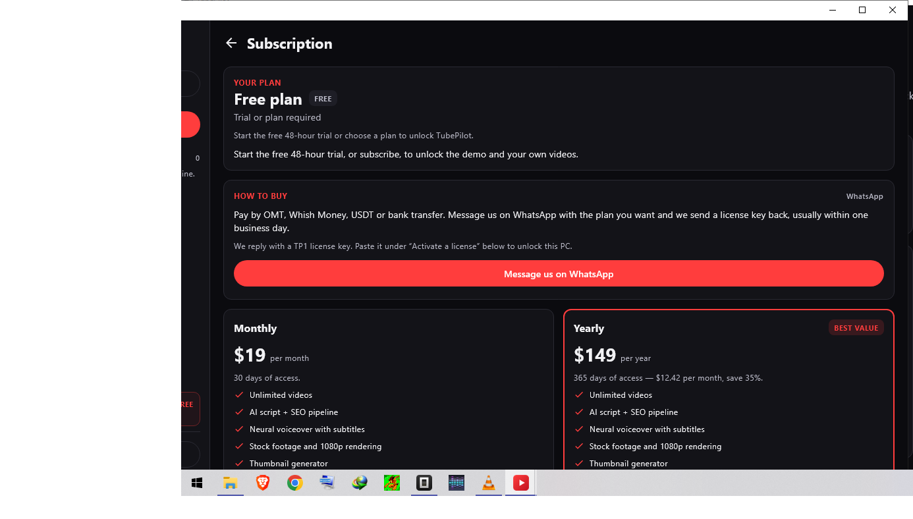

Unattended pipeline
Enter a niche, or a topic, and press once. Each stage runs in order, reports progress in the Auto tab, and can be stopped or retried without losing finished work.
TubePilot writes the script, records the voiceover, illustrates every scene, renders a 1080p video with burned-in subtitles, builds the thumbnail and uploads it to YouTube. One window, one click, your own PC.
Most AI tools stop at text. TubePilot carries the job through voice, visuals, editing, thumbnails and publishing — and keeps every step editable when you want to take over.
Enter a niche, or a topic, and press once. Each stage runs in order, reports progress in the Auto tab, and can be stopped or retried without losing finished work.
Hook-first narration split into timed scenes, each with a visual prompt, plus a title, description, tags and thumbnail overlay words.
Microsoft Edge neural voices in 16 languages, with word-accurate subtitle timings. If the online service is unreachable, installed Windows voices take over.
Each scene image is drawn from its own script prompt — not a keyword search. Optional moving AI clips and a slow Ken Burns move for stills.
AI video, AI stills, Pexels, Pixabay, Unsplash, the bundled offline library, Openverse, Wikimedia and NASA — the first usable match wins, every time.
Bundled FFmpeg cuts clips to length, scales and pads to 1920×1080, mixes an optional music bed, burns in the SRT and writes H.264/AAC MP4s.
1280×720 JPEG built from a strong scene image, a gradient treatment and your overlay words — regenerate with different text in seconds.
Resumable upload through the official API with metadata and thumbnail. Defaults to Private, supports Unlisted, Public and scheduled publishing.
Switch the entire interface from the sidebar. Arabic is laid out right-to-left, and the choice is remembered on the next launch.
The same engine runs from the command line for Windows Task Scheduler: pick a niche, render and upload on a daily schedule.
Settings, projects, videos and caches live in one folder under %APPDATA%. Back it up, move it to another PC, or delete it to start clean.
No bots, no view or like automation, no fake engagement. Uploads use the official API and its real quota — roughly six videos a day.
Every stage can also be used on its own from the project tabs, so you can regenerate a script, swap a voice, or re-render without starting over.
One switch flips the whole window, including the sidebar, project tabs, Settings and Subscription screen. Arabic reads right-to-left.


Turn on AI footage and every scene is illustrated from its own script prompt. Leave it off, run out of quota, or work offline, and the video still gets made — TubePilot walks down the chain until a source delivers.
No Python, no FFmpeg install, no build tools. The app ships with its own Java runtime and encoder.
Run the installer, or unzip the portable build and start TubePilot.exe. Start the 48-hour free trial on the Subscription screen — no card, once per Windows profile.
Open Settings and paste a free Gemini key for scripts and SEO. Optionally add AI image keys, stock keys, a voice and your YouTube connection.
First-time setupChoose New video, describe your niche, pick a length from 2 to 20 minutes and run everything. Watch the stages, then review the MP4 and thumbnail.
Your first videoA narrated tour of the whole workflow: install, keys, niche, script, voice, visuals, subtitles, render, thumbnail and publishing. Same steps, same app, recorded in English and in Arabic.
Windows 10 or 11, 64-bit. Choose the standard build or the Lebanese edition, which adds Lebanese and Egyptian narration voices and a Lebanese Arabic interface.
Installs for the current user with no administrator prompt, adds a Start-menu shortcut and an uninstaller. New builds upgrade straight over the old one.
Download installer
Unzip anywhere and double-click TubePilot\TubePilot.exe. Nothing is
installed; settings and videos still live in %APPDATA%\TubePilot.
The same 1.0.2 app plus Lebanese (ar-LB) and Egyptian (ar-EG)
neural narration voices, Arabic (Lebanon) and Arabic (Egypt) project languages, and a
Lebanese Arabic interface option. Installs for the current user with no admin prompt.
ec520708021e37e83fc5fd27042e5a2e67481a549e3b469056dc057103dbc8e8
f029eaeaebccc4f60ea1bb2d0c5d8314087084750a0fe453af44170cac6088c5
3dc5dddf3278aba7096968195582e41eb7103baca763307f2456e0b0ea0f40c4
Get-FileHash .\TubePilot-Setup-1.0.2.exe -Algorithm SHA256
SHA256SUMS.txt · sample videos and walkthroughs are in the release folder
SmartScreen notice. The build is not code-signed yet, so Windows may say “Windows protected your PC”. Click More info, then Run anyway. You can verify the file against the SHA-256 checksum above before running it.
One license unlocks the studio on a PC. Payment is handled directly on WhatsApp — OMT, Whish Money, USDT or bank transfer.
Already have a key? Open Subscription → Activate a license,
paste the TP1… key and it verifies offline. The same key works on the Windows
and Android apps. Questions? Message +961 3 091 136.
You need one AI key for your own videos, and Gemini's free tier is enough for
scripts and SEO. The --demo command renders a complete built-in
sample with no keys at all. Stock footage, the bundled offline library and the
free neural voices work without any stock or voice keys.
Only when you run the pipeline with uploading enabled, and uploads default to
Private. You can render locally with Upload after rendering
turned off, use --no-upload, or skip the YouTube connection entirely.
Sixteen narration languages: English (US and UK), Spanish, French, German, Italian, Portuguese, Arabic, Hindi, Urdu, Turkish, Indonesian, Russian, Japanese, Korean and Chinese. The interface itself switches between English and Arabic.
Yes. Rendering uses the CPU and the bundled FFmpeg. A GPU only helps the window
itself; on remote desktops or VMs with no 3D support, set
TUBEPILOT_SOFTWARE_RENDER=1 before launching.
The renderer, the bundled sample library and FFmpeg are local, so a video can be rendered offline. Scripts and SEO need your AI provider, stock downloads need internet, and the free Edge voices are online — Windows SAPI voices cover offline narration.
YouTube grants 10,000 API units per day and an upload costs about 1,600, so expect roughly six uploads daily per Google Cloud project. Local renders are unlimited. See the YouTube guide for details.
Install, start the 48-hour trial, paste a free Gemini key and press Create & run everything. The full manual covers every screen and every setting.